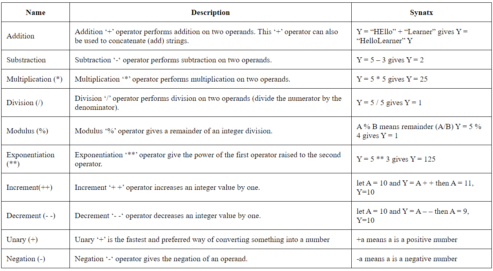
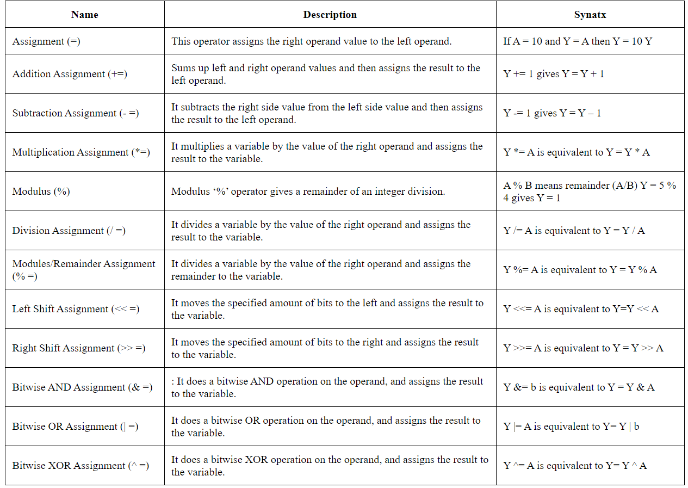

JavaScript Operators
JavaScript operators operate the operands, these are symbols that are used to manipulate a certain value or operand. Operators are used to performing specific mathematical and logical computations on operands.

In JavaScript, operators are used to compare values, perform arithmetic operations, etc.
JavaScript Arithmetic Operators
JavaScript Assignment Operators
The assignment operation evaluates the assigned value. Chaining the assignment operator is possible in order to assign a single value to multiple variables
JavaScript Bitwise Operators
The bit wise operator in JavaScript is used to convert the number to a 32 bit binary numder and perform the bitwise operator. The number is converted back to the 64-bit number after the result.